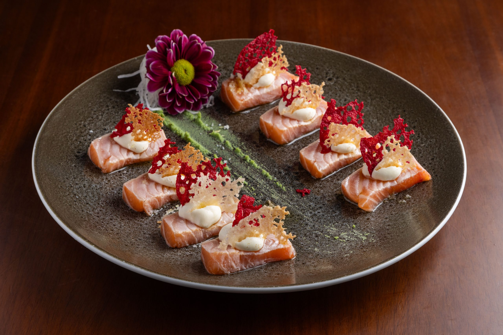
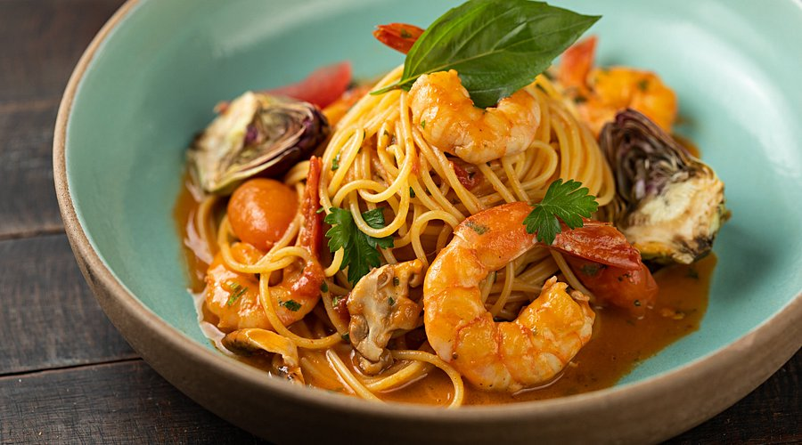
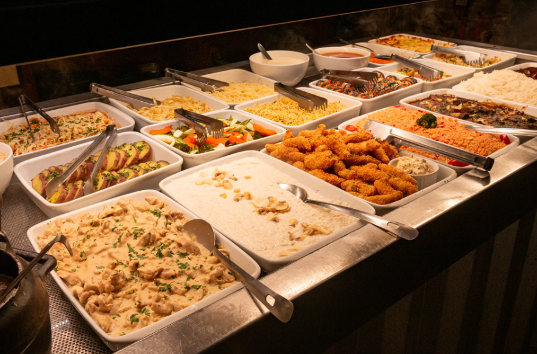
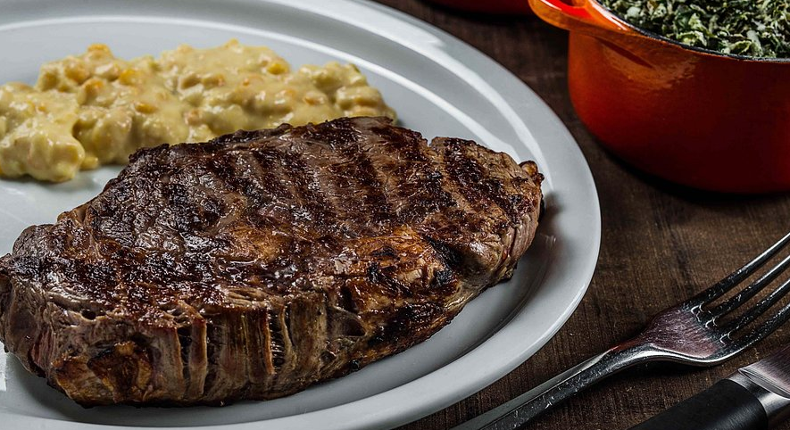
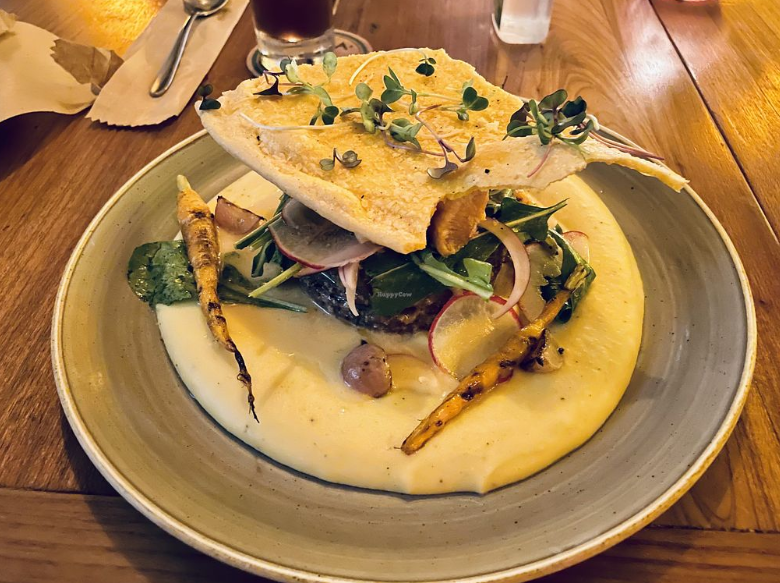
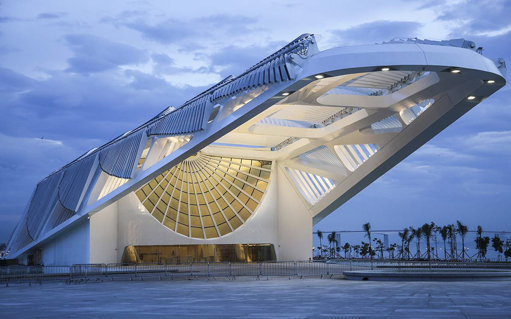

Cafés & Padarias
Restaurantes

Jappa da Quitanda
Japonês contemporâneo com ingredientes frescos e ambiente sofisticado.
Rua Barão da Torre, 422

Alessandro & Frederico
Gastronomia italiana de alta qualidade, com massas e grelhados.
Rua Garcia D'Ávila, 134

Frontera
Buffet a quilo variado e de qualidade, excelente para um almoço prático.
Rua Visconde de Pirajá, 128
Pizzaria Capricciosa
Pizza D.O.C. ao estilo napolitano, com forno a lenha e ingredientes importados.
Rua Vinícius de Moraes, 134

Esplanada Grill
Steakhouse tradicionalíssima, ponto de encontro clássico para os amantes de carnes nobres.
Rua Barão da Torre, 600

Zazá Bistrô Tropical
Culinária contemporânea com toques asiáticos em um ambiente tropical e super charmoso.
Rua Joana Angélica, 40Bares & Drinks
Passeios Imperdíveis


Museu do Amanhã
Arquitetura futurista e exposições interativas sobre o futuro do planeta.
Pedalinho na Lagoa
Um passeio clássico e relaxante com visual incrível das montanhas e natureza.